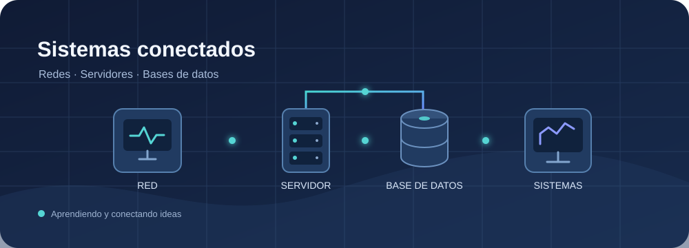

Ahora
Administración de Sistemas Informáticos en Red
Estoy cursando 1.º de ASIR en el IES Rodrigo Caro, en Coria del Río.
Estudiante de ASIR · Sevilla
Me gusta la informática y descubrir qué pasa detrás de la pantalla. Ahora estoy aprendiendo sobre sistemas y redes.
Aprendiendo paso a paso, con curiosidad.
Ahora
Estoy cursando 1.º de ASIR en el IES Rodrigo Caro, en Coria del Río.
Formación completada
Finalicé SMR en 2026 en el IES Rodrigo Caro, con una nota media de 8,5.
Cuando no estoy estudiando
Me interesan las nuevas tecnologías y todo lo relacionado con redes, sistemas y bases de datos. Y también me gusta disfrutar de una buena serie de anime.
